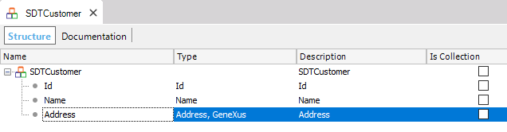
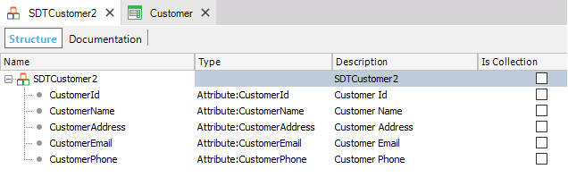

Defines a compound data type that groups fields of other data types and collections. DescriptionLargely known as Record, Struct, or Structure in most programming languages, GeneXus offers the Structured Data Type (SDT) object to allow defining compound data types. A Structured Data Type (SDT) object represents data whose structure is made up of several members. After creating an SDT object, you are ready to define its structure:  Also, instead of starting to define the SDT’s members one by one, you can drag a Transaction (in the example, the Customer Transaction) from the KB Explorer and drop it on the SDT structure. Thus, you obtain in the SDT structure the members automatically created with the same names as the attributes in the Customer Transaction with their data types:  You can define only variables based on SDTs. On the other hand, you cannot define attributes based on SDTs because attributes may only store simple data. When defining a member in an SDT design, you must specify the Name property identifying the member; therefore, there cannot be two members with the same name. The Data Type property allows selecting among the following data types:
The IsCollection checkbox allows you to define whether the member has multiple (several) instances or not. See AlsoStructured Data Type Properties |
| Pages | ||
| Exposed name property | Implementing SDT collections | Recursive SDTs |